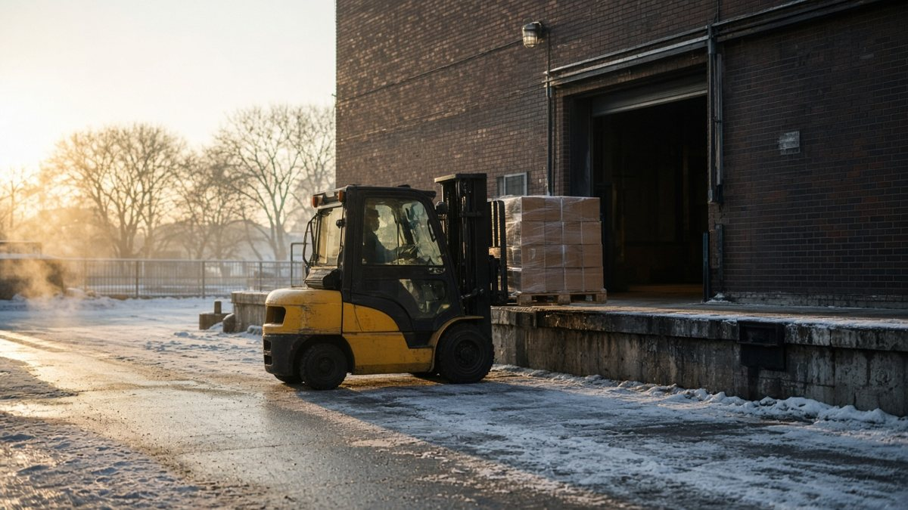

Mortar Smash › Trade guides › Which mortar for brickwork
Short answer
Choose mortar from the job and the specification, not the strongest bag. For most above-grade brick veneer that means Type N; for walls at or below grade, such as retaining walls, the Acme Brick selection guide recommends Type M with Type S as the alternative. Do not change a specified mortar type without approval from whoever designed the wall.

1. Start with the job, not the bag
Note whether the brickwork is loadbearing, veneer, a parapet, a retaining wall or an interior partition, and whether it sits above or below grade. Check the drawings, project specification, brick data and local code. The Acme Brick 2026 pocket guide says the National Concrete Masonry Association and the Brick Industry Association recommend the weakest mortar that will meet the strength requirements, and that Type N is best for most masonry veneer.
2. Acme selection table at a glance
| Location and segment | Recommended | Alternative |
|---|---|---|
| Exterior, above grade: loadbearing walls | N | S or M |
| Exterior, above grade: non-loadbearing walls | N | S |
| Exterior, above grade: parapet walls | N | S |
| Exterior, at or below grade: foundation and retaining walls, sewers, pavements, walks, patios | M | S |
| Interior: loadbearing walls | N | S or M |
| Interior: non-loadbearing partitions | N | S |
Source: Acme Brick, Guide for the Selection of Masonry Mortars. The guide says alternatives suit design conditions or exposures other than normal, that it does not cover specialised mortars, and that mortar on nominally horizontal exposed surfaces is very vulnerable to weathering and should be selected with caution.
3. What the letters mean, and what they do not
Under the ASTM C 270 property method, the 28 day laboratory compressive strength requirements are 2,500 psi for Type M, 1,800 psi for S, 750 psi for N and 350 psi for O. Acme stresses these apply to laboratory-prepared specimens only, that there is no provision for strength testing job site mortar, and that field-sampled strengths are not pass or fail values. Proportion specifications are preferred to property specifications. More on the types: mortar types N, S, M and O.
4. Repairs and repointing
The Acme maintenance digest (Technical Services Digest 216) says to determine the moisture source before attempting repairs, to repoint damaged or deteriorating mortar, and to repoint with prehydrated Type N, O or K mortar mixed drier than for conventional masonry work. Replacing joints will not cure a leak that is feeding the damage. For old or soft brick, match the repair mortar to the wall rather than to whatever bag is on the truck: see how to repoint brick and lime vs cement mortar.
5. Joint finish and wall details
Acme's guide ranks the concave and V joints as the most watertight, the weather, struck and flush joints as middling, and the raked joint as the least weathertight. Mortar is one part of the wall's moisture control, alongside flashing and weep holes; see joint profiles and weep holes. Follow the manufacturer's mixing instructions or the approved proportions, and see cold weather and hot weather work for conditions.
6. Site checklist
- Confirm the wall type, exposure and the mortar type in the specification.
- Check unit type and, for repairs, identify existing mortar and the moisture source.
- Use the approved proportions or the manufacturer's mix instructions.
- Do not treat site test results as ASTM C 270 compliance.
- Get designer approval before substituting a mortar type.
Which mortar for brickwork FAQ
Is Type S always better than Type N?
No. Type S has a higher laboratory compressive-strength figure (1,800 psi vs 750 psi), but the NCMA and BIA advice quoted by Acme Brick is to use the weakest mortar that meets the strength requirements. Acme says Type N is best for most masonry veneer.
Which mortar should I use for a brick retaining wall?
Follow the engineered wall specification. Acme Brick's selection guide lists Type M as recommended and Type S as the alternative for exterior masonry at or below grade, including foundation walls, retaining walls, sewers, pavements, walks and patios. Mortar choice does not replace structural design or drainage.
Which mortar should I use for above-grade brick veneer?
Type N is the recommended mortar for non-loadbearing exterior walls above grade in Acme Brick's guide, with Type S as the alternative. Confirm against the project specification before ordering.
Can I use a strong modern mortar to repoint old bricks?
Not without an assessment. Acme's maintenance digest says to find the moisture source before repairing and to repoint with prehydrated Type N, O or K mortar mixed drier than for conventional work. Our repointing guide, which follows National Park Service Preservation Brief 2, explains why repair mortar should be no harder than the original and softer than the brick.
Can mortar cubes taken on site prove ASTM C 270 compliance?
No. Acme quotes ASTM C 270: strengths from field-tested mortar do not represent laboratory strength or the mortar in the wall, and field-sampled properties are not criteria for accepting or rejecting mortar. The lab figures apply to laboratory-prepared specimens only.
Does adding more cement make joints last longer?
Not as a rule. Acme notes that proportion specifications are preferred to property specifications, and that the aim is the weakest mortar that meets requirements. Changing a specified mix on site is not a controlled improvement, so keep to the approved proportions.
Should I seal a wall after repairing mortar?
Not automatically. The Acme digest says to inspect masonry and correct all deficiencies before applying any external coating, and lists water-repellent coatings as lasting 5 to 10 years per the manufacturer's warranty. Fix the moisture source first.
Sources
- Acme Brick, The Pocket Guide to Brick Construction (2026): mortar proportions by volume and Guide for the Selection of Masonry Mortars
- Acme Brick, Technical Services Digest 216: Maintenance Schedule for Masonry
- National Park Service, Preservation Brief 2: Repointing Mortar Joints in Historic Masonry Buildings (via our repointing guide)
- Image policy (AI-generated illustration)
Figures are quoted or condensed from the sources above. Codes and project specifications differ by country and job; where they conflict with this page, follow them.
Published 10 November 2026 by Mortar Smash. General information only, not engineering or code advice.